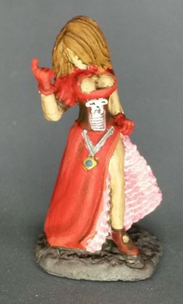

Welcome to The Fantasy Page
This page will showcase Fantasy models I have painted.
Werewolvs
Werewolvs are people who are curse to become a wolf montrer.

Goblins
A goblin is a monstrous creature that comes from European folklore.


People
In fantasy their are many kinds human and humanoid beings.
Human
Elf
Wizard